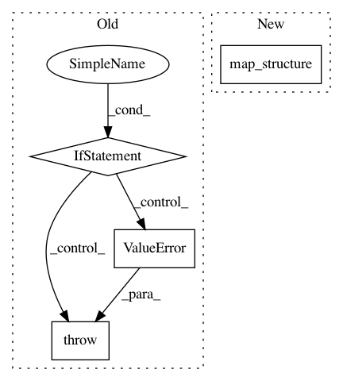

1775e89f262111791fabfd40f80a24f74738fe54,rllib/policy/policy.py,,clip_action,#Any#Any#,388
Before Change
Clipped batch of actions.
if isinstance(space, gym.spaces.Box):
return np.clip(action, space.low, space.high)
elif isinstance(space, gym.spaces.Tuple):
if type(action) not in (tuple, list):
raise ValueError("Expected tuple space for actions {}: {}".format(
action, space))
out = []
for a, s in zip(action, space.spaces):
out.append(clip_action(a, s))
return out
else:
return action
After Change
a = np.clip(a, s.low, s.high)
return a
return tree.map_structure(map_, action, action_space)
In pattern: SUPERPATTERN
Frequency: 4
Non-data size: 4
Instances
Project Name: ray-project/ray
Commit Name: 1775e89f262111791fabfd40f80a24f74738fe54
Time: 2020-04-28
Author: sven@anyscale.io
File Name: rllib/policy/policy.py
Class Name:
Method Name: clip_action
Project Name: tensorflow/agents
Commit Name: 1bef8a0cb502401e33f8572897d981ef81a1a829
Time: 2020-04-30
Author: bartok@google.com
File Name: tf_agents/bandits/policies/neural_linucb_policy.py
Class Name: NeuralLinUCBPolicy
Method Name: _action
Project Name: tensorflow/agents
Commit Name: c62215debda5bf5d89723f4112f1e3e2f063cd52
Time: 2020-04-17
Author: kokiopou@google.com
File Name: tf_agents/trajectories/time_step.py
Class Name:
Method Name: termination
Project Name: tensorflow/kfac
Commit Name: 94855fb1910ff6b9dd8306dafd097ac9f93eb57b
Time: 2019-08-13
Author: jamesmartens@google.com
File Name: kfac/python/ops/utils.py
Class Name:
Method Name: cross_replica_mean